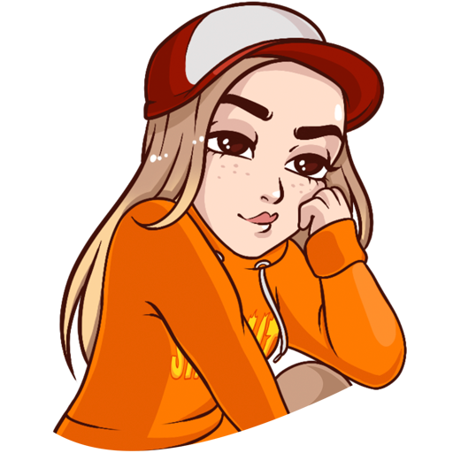
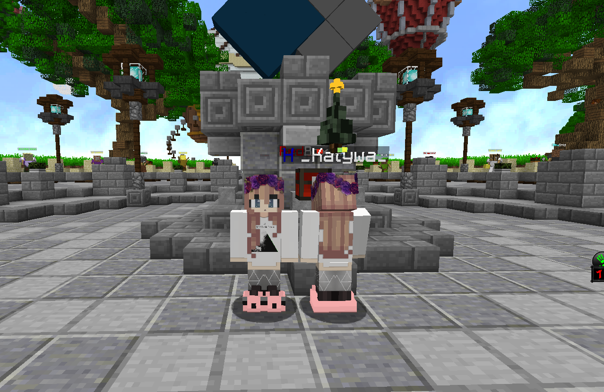
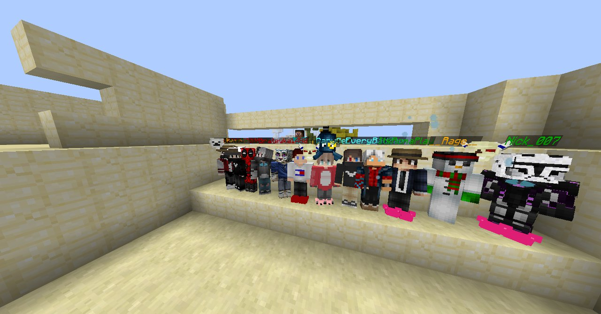

История мафии CIM очень обширная и богатая.В этой истории было много спадов,взлетов,но тем не менее,результат вы видите сами.
Начало CIM положил я (_Katywa_) и мой очень хороший друг (Loster),так же в поддержке участвовал (Ice_dragon). Когда на 1 Кристаликсе открыли Annihilation(beta-test),Я впервые зашел на кристаликс,За это время я узнавал комьюнити и многое другое,узнавал политики различных кланов,а их была уйма..
В конце-концов кристаликс полег в гроб,и открылась вторая версия кристы,я играл там в бедварс,пока не повстречал много друзей,таких как Immortelle,Hawkridje... Потом я встретил человека,который подкатывал ко мне в чате...Мы поговорили поговорили,и решили пойти в дискорд... Это положило начало нашей дружбы с Loster'ом.
Долгое время мы дружили,в то же время я дружил и с Ромой(Hawkridje),и ему я предлагал идею создать свой клан по аннигилейшену.Он видел эту идею плохо,тогда я заикнулся об этом с лостером,он сказал что это хорошая идея. Потом долгое время мы об этом не говорили,и в конце концов я уехал в лагерь на две недели. По приезду домой я зашел вк,и увидел сообщения от него,несущие один смысл:"я создал клан,наш с тобой клан,ты будешь главным" В клане на первое время было очень много незнакомых людей,но несколько человек самого первого состава до сих пор в составе CIM. Постепенно мы с ним звали еще больше хороших игроков с кристы,в основном из Бедварса и Креатива.
В конце концов,случилась беда.У нас с Loster'ом возник конфликт,и в результате него возник большой срач,который привел к большим переменам. Новым админом стал Immortelle.Он создал новые правила и уладил конфликт,и клан снова начал развиваться в привычном русле. Через пару дней у меня с Лостером снова возник конфликт.Он понес разрушение клана. Я взял своих друзей,и ушел в свой клан,с тем же названием. Loster создал свой клан S.A.D,а девушки YOUR_SHAME и Louary создали тоже клан-Wind Alliance. Паралелльно с моим кланом,я был модером в Wind Alliance.
В Винд Альянс было очень весело,веселее и атмосфернее чем во всех кланах,в которых я побывал.В конце концов я ушел в CFT из-за разногласий С YOUR_SHAME. В CFT я был админом.И клан прожил до распада кристы. Когда распалась криста,тогда распался и CFT,и я решил создать не клан,а Мафию.С тех самых пор мы до сих пор живы. Многие игроки пошли в CIM,а в CFT пришлось набирать новых... Такая нелегкая судьба у CIM.